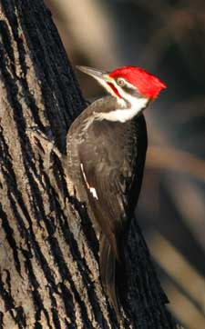

Suet ? hard fat trimmed from beef ? is a great food to attractmany
woodpeckers and other insect-eating birds. But the suet cakes soldin stores usually have added grain that may cause squirrels to tearthem apart, and they're more expensive than suet you can get from abutcher shop.
In order to save money and squirrel-proof your bird feeder, you canbuy a big bag of suet from a butcher for just a couple dollars. Cutthe suet into pieces that will fit into your suet feeder, thenstore extra in your freezer. (Some supermarkets sell suet butothers get all their meat pre-cut and boxed, and the workers in themeat section may not even know what suet is. The best place toobtain suet is at a local butcher shop that processes whole beef.)If you don't add any extra nuts or seeds, the squirrels won'tbother the suet.
|
 |
|
|